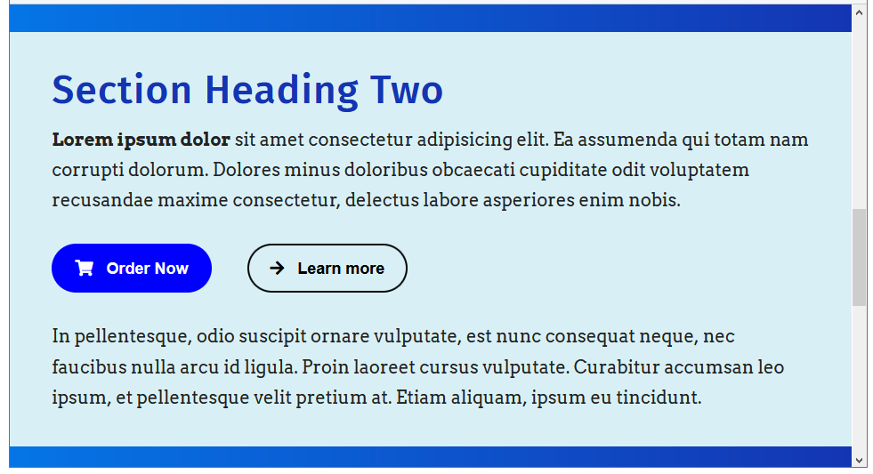
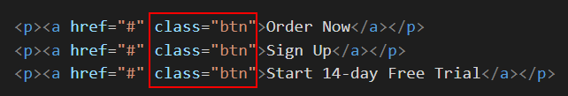
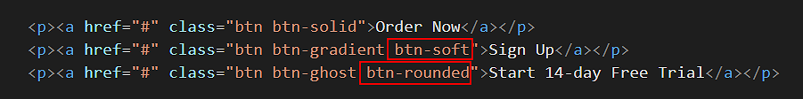
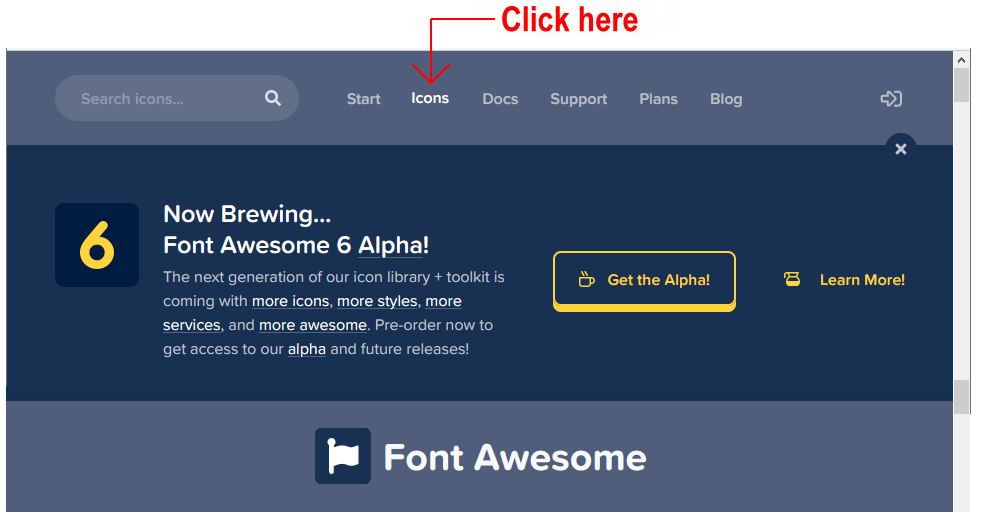
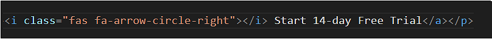
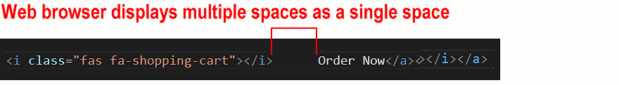
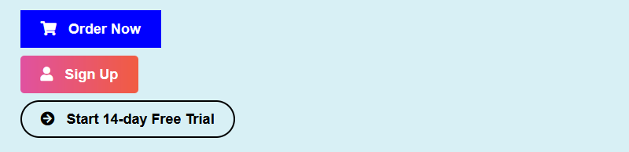

At the end of this Tutorial, you will be able to:
- Style hyperlinks as buttons with solid colour or transparent backgrounds.
- Apply soft corners and rounded edges to hyperlinks styled as buttons.
- Add Font Awesome icons to your web pages.
You can view the finished version of the sample web page you will create in this Tutorial by clicking the image below. The finished sample will open in a new tab of your web browser.
Creating your sample files
In this Tutorial, you will update a copy of a sample web page and stylesheet you created in the Working with Sections Tutorial.
- In VS Code, open the page-11.html web page in your 📁 websites/exercises sub-folder and save it with this new name: buttons-icons.html.
- Open the style-11.css stylesheet in your 📁 websites/exercises/assets/css sub-folder and save it with this new name: buttons-icons.css.
- In the new buttons-icons.html file, rename the linked stylesheet from style-11.css to buttons-icons.css and save the web page.
- Finally, in the web buttons-icons.html page, replace the current title and description details with the following:
<title>Sample web page with buttons and icons</title> <meta name="description" content="A sample web page with a range of buttons styles and Font Awesome icons.">
This web page includes an image file named three-staff.jpg which you already have in your 📁 websites/exercises/assets/img sub-folder.
Adding the buttons to your web page
Follow these steps to add three faux buttons to your sample buttons-icons.html web page.
- In VS Code, scroll to between the two text paragraphs in the second section block.
 This has a h2 sub-heading named “Section Heading Two” and a light-coloured background.
Press the Enter key a few times to open up some empty lines.
This has a h2 sub-heading named “Section Heading Two” and a light-coloured background.
Press the Enter key a few times to open up some empty lines. - To this space, copy-and-paste the following three <p> paragraph tags, each one containing a sample hyperlink.
<p><a href="#">Order Now</a></p> <p><a href="#">Sign Up</a></p> <p><a href="#">Start 14-day Free Trial</a></p>
- Save the buttons-icons.html web page and view it in your browser.
You can see that the three hyperlinks appear as ‘ordinary’ hyperlinks. You have not yet created the faux button styles that will make them display as buttons.
Note that the vertical spacing between the hyperlinks is the result of the margin-bottom style rule of their surrounding <p> paragraph tags.
The <a> hyperlink tag, like the <b> bold and <i> italic tags, creates an inline element.
- The <a> hyperlink tag does not force a line-break before or after it.
- You cannot assign any margin value to an <a> hyperlink tag, to push other elements away from it, either vertically (above or below) or horizontally (left or right).
Creating the button styles
Next, follow the steps below to create classes with style rules for the faux buttons on your web page.
- In VS Code, display the buttons-icons.css stylesheet, and scroll down to the end, to just above the /* == UTILITY CLASSES === */ block.
- Copy-and-paste the following new classes and their style rules.
/* =============== BUTTONS AND ICONS ============== */ /* All buttons */ .btn { font-family: sans-serif; text-decoration: none; padding: 14px 26px; font-size: 18px; font-weight: bold; /* text-transform: uppercase; letter-spacing: 1px; word-spacing: 102%; */ }
You will apply this general-purpose .btn to all faux buttons, regardless of their type. (The style rules within comments are available for when you want your button text to appear in all upper-case characters.) Save your stylesheet. - Switch to the buttons-icons.html web page, add the btn class to all three hyperlinks, and save the file. See below. 
- Next, switch back to the buttons-icons.css stylesheet. Copy-and-paste the three classes below.
/* Solid buttons */ .btn-solid:link, .btn-solid:visited { background-color: blue; color: #fff; } .btn-solid:focus, .btn-solid:hover, .btn-solid:active { background-color: darkblue; color: #fff; } /* Gradient buttons */ .btn-gradient:link, .btn-gradient:visited { background-image: linear-gradient(90deg,#e052a0,#f15c41); color: #fff; } .btn-gradient:focus, .btn-gradient:hover, .btn-gradient:active { background-image: linear-gradient(to right,#3ec7e0,#526bf4); color: #fff; } /* Ghost buttons */ .btn-ghost:link, .btn-ghost:visited { border: solid 2px #000; color: #000; background-color: transparent; padding: 12px 24px; } .btn-ghost:focus, .btn-ghost:hover, .btn-ghost:active { border: solid 2px blue; color: blue; background-color: transparent; padding: 12px 24px; }
- The first class is for when you want to style your buttons with a solid color background.
- The second is for when you want your buttons to have a colour gradient background.
- And the third is for ghost (transparent background) buttons.
- Switch back to the buttons-icons.html web page and apply the three classes to the hyperlinks as shown below. When finished, save the web page.

- Display the web page in your browser. The hyperlinks-as-buttons should now look as shown below.
 Hover over the buttons with your mouse to view the interactive states of the buttons.
Hover over the buttons with your mouse to view the interactive states of the buttons.
Click here to view a finished sample of this web page as it should now look.
Creating button corner styles
By default, all three button classes you created have square corners. To add some visual variety, create two more corner styles. Here are the steps.
- In VS Code, display the buttons-icons.css stylesheet.
- Under the three button-related classes you have already added, copy-and-paste these two new ones.
/* Button corner styles */ .btn-soft { border-radius: 5px } .btn-rounded { border-radius: 30px }
When finished, save your stylesheet. - In your web page, add the two new classes: one to the second button, and the other to the third button. See below. 
- Save your web page and view the result in your browser. It should now look as shown below.

Click here to view a finished sample of this web page as it should now look.
Adding Font Awesome icons
Font Awesome is widely-used option for adding icons buttons on web pages. Follow the steps below to add icons from Font Awesome to your sample web page.
- In VS Code, display your buttons-icons.html file.
- In the head block, just before the closing </head> tag, copy-and-paste the following comment line and code.
<!-- Link to icons for Font Awesome 5 --> <link href="https://cdnjs.cloudflare.com/ajax/libs/font-awesome/5.15.3/css/all.min.css" rel="stylesheet" integrity="sha512-iBBXm8fW90+nuLcSKlbmrPcLa0OT92xO1BIsZ+ywDWZCvqsWgccV3gFoRBv0z+8dLJgyAHIhR35VZc2oM/gI1w==" crossorigin="anonymous">
This adds the Font Awesome stylesheet to your web page. - Use your web browser to go to this web address: https://fontawesome.com/
- Click the option named Icons in the menu bar across the top of the screen. 
- On the next page displayed, you can use the Search box to locate icons by name from the Font Awesome range of 1,535+ free icons.
For exampl, in the Search box, enter the word:
user
and click the result displayed below.

- On the next screen displayed, you can see the HTML code to generate the 'user' icon.
 Just click once on the code to copy it.
Just click once on the code to copy it.
 The HTML icon code will look as follows.
The HTML icon code will look as follows.

- You can now copy-and-paste this or other selected icons to your web pages.
- In your buttons-icons.html web page, locate the second of the three hyperlink buttons.
- Click just before the ‘Sign Up’ text, paste the HTML code you copied from Font Awesome, and then press the Spacebar key just after the icon code.

- Save and view your buttons-icons.html. Your second of three button-styled hyperlinks should look similar to the following.

- Next, return to Font Awesome, and search for the following icon: shopping cart
- From the list of search results displayed, click the first one.
 .
. - On the next screen displayed, click the HTML code to copy it.
 .
. - In your buttons-icons.html web page, locate the first of your three hyperlink buttons.
- Click just before the ‘Order Now’ text, paste the HTML code you copied from Font Awesome, and then press the Spacebar key once after the pasted code.

- Next, return to Font Awesome, and search for the following icon: right arrow
- Click to select one of the options returned. For example, this one.
 .
. - Copy-and-paste the icon code to just before the text of your third hyperlink button, and then press the Spacebar key once. 
- Save and view your buttons-icons.html. Your three button-styled hyperlinks should look similar to the following.

You have now successfully added Font Awesome icons to your web page.
Adding spacing to icons in your buttons
Within your hyperlink buttons, the single space between the text and the icons, created by pressing the Spacebar key once, is not enough. More spacing is needed.
You could type several spaces simply by pressing the Spacebar multiple times. But the web browser will combine multiple empty spaces into a single space. So that is not a solution.
One option is to type the special HTML code that forces an empty space. This is the non-breaking space character. You type this as follows:
For example, in your first hyperlink button, you could type three non-breaking space characters before your button text as shown below.
Inside each button, between the icon code and the text, you have four spaces.
- One space is the result of pressing the Spacebar.
- The other three are created by the three character codes.
Your button will now display as follows in your web browser.
Unfortunately, adding lots of codes to text can cause problems when your web page is displayed on mobile-sized screens.
The better solution is to use CSS to add a margin-right spacing value to your icons. Here are the steps.
- In your buttons-icons.html web page, remove any codes you may have added inside your hyperlink buttons. You can leave the single, blank space you typed by pressing the Spacebar key.
- Switch to your buttons-icons.css stylesheet, and copy-and-paste the following after all your other button styles.
/* Buttons with Font Awesome icons */ .btn i { margin-right: 10px; }
- Save your web page and stylesheet. Your web page should now look as follows. 
That’s it. You have now successfully added spacing to icons within your button-styled hyperlinks.
Click buttons-icons.html to view a finished sample of this web page in a new tab of your web browser.
Updating your website home page
Now that you have updated and styled a new web page, let’s add a hyperlink to it on the ‘home page’ of your web site. Follow the steps below:
- In VS Code, open this HTML file in your ‘main’ websites folder: index.html
- Copy-and-paste the following new line to your web page at end of the current list of web pages.
<p><a href=exercises/buttons-icons.html">Buttons and icons</a></p>
Save your index.html web page and view the result in your browser.
Uploading your files to GitHub
After finishing your web page and stylesheet, you are now ready to upload them to your account on GitHub.
- Open a new tab in your web browser and go to GitHub.com. If you are not already signed in to your GitHub account, sign in now.

- On your GitHub home page, click the ‘repo’ that holds your web pages. Its name will look as follows, where username is your chosen username on GitHub.
username.github.io

- On the next GitHub screen displayed, near the right of the screen, you can see a button named Add file. Click on it.

- From the dropdown list displayed, choose the option Upload files.

- In File Explorer (Windows 10) or Finder (Apple Mac), drag-and-drop your index.html file and your 📁 exercises sub-folder to upload them to your repository on GitHub.

- Scroll down to the bottom of the GitHub screen, and accept or edit the short message (Add files via upload) in the Commit changes box.
- Finally, click the green Commit changes button to upload your files.

Your updated home page and sample web page are now published on GitHub at web addresses similar to the following:
https://username.github.io/index.html
https://username.github.io/exercises/buttons-icons.html
It may take a few minutes for your uploaded files to appear on GitHub.